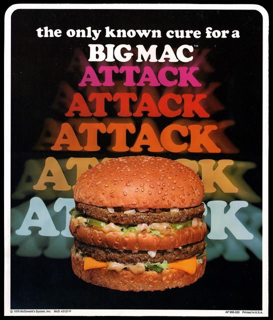

Vintage McDonald's!
Classics

Here are some of our all time classics!
Big Mac
First in line is the Big Mac. This burger has become the most popular hamburger in our restaurant. It comes with two beef patties topped with lettuce, unions, and our special sauce. There is a third bun that divides the patties. Over the years we've added many new burgers to our roster but the Big Mac reigns supreme!!!
The Fish Filet
The Fish Filet is a McDonald's favorite. This fish sandwiches can compete with any sandwich or burger. It is made with a fresh and juicy fish plank topped with delicious tartar sauce cheese. It's a simple recipe. And oftentimes, simple is the way to go!
The Shamrock Shake
Here at McDonald's we're known for having the most delicious milkshakes around and the Shamrock milkshake is no exception. This milkshake is seasonal and is usually offered around St.Patrick's Day. The flavor is magical and tastes like something straight from a fairy tale! So come on to your local McDonald's and eat all you want of these delicious classics!